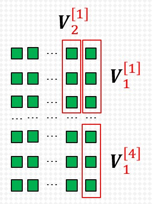

1. PointNet¶
大多数研究人员将点云数据转换为规则的3D体素网格或图像集合，但是使得数据变得庞大。
本文中设计了一种直接消耗点云的新型神经网络，该网络很好地考虑了输入中点的排列不变性。为从对象分类，零件分割到场景语义解析的应用程序提供了统一的体系结构。
1.1. Introduction¶
本文专注于仅使用点云的3D几何图形的不同输入表示形式。
重要
该网络尊重这样的事实：点云是一组点，成员的排列不变，因此在网络计算中具有一定的对称性。还需要考虑刚性运动的其他不变性。
PointNet直接将点云作为输入。在初始阶段，每个点都被相同且独立地处理。每个点仅由其三个坐标（x，y，z）表示。可以通过计算法线和其他局部或全局特征来添加其他尺度。
重要
该方法的关键是使用单个对称函数，即最大池化层。
网络有效地学习了一组优化功能/标准，这些功能/标准选择了点云中有意义的点，并对进行了编码。
网络的最终完全连接层将这些学习的最优值汇总到上述整个形状的全局描述符中（形状分类），或用于预测每个点的标签（形状分割）。
小技巧
通过添加一个依赖于数据的空间转换器网络，在PointNet处理数据之前对数据进行规范化，以进一步改善结果。
1.2. Input/Output¶
PointNet框架直接使用无序点集作为输入。
点云表示为一组3D点 \(\{P_i | i = 1,...,n\}\) ，其中每个点 \(P_i\) 是其 \((x,y,z)\) 坐标加上额外特征通道（例如颜色，法线等）的向量。
对于目标分类任务，输出为k个分数，分别对应k个可能的类别。
对于语义分割任务，输出 \(n\times m\) 个分数，分别对应n个点相对于m各类别的分数。

PointNet 应用场景¶